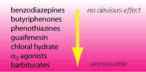

ataractic (= tranquilliser) - reduces anxiety without
causing drowsiness. Usually produce no obvious effect in animals.
hypnotic - produces sleep
narcotic - produces a stupor bordering on general anaesthesia.
This state used to be produced in people with opium, hence morphine
type drugs are called narcotics in law.
neuroleptic = ataractic
sedative - produces drowsiness
tranquilliser = ataractic
(do not confuse with analgesic = a drug
that reduces pain)
In veterinary practice, the distinctions between these classes of drugs is usually not clear - I will refer to them all as sedatives.
Most drugs have effects on a wide variety of receptor systems but probably work by reducing input to the ascending reticular formation. Activation of the ascending reticular formation will increase arousal and is thought to be be responsible for consciousness. Knowledge of the receptors affected is important to predict interactions and side effects.

Indications
Phenothiazines
α2 agonists
Benzodiazepines
Butyrophenones
Obsolete drugs
Neuroleptanalgesia
Species recommendations